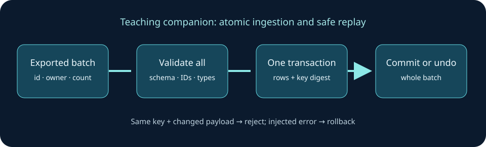

PYTHON / ASSET MANAGEMENT
Asset Inventory Reconciler
Compares two exported CSV inventory snapshots and creates an offline, searchable HTML report, JSON summary, and spreadsheet-friendly CSV findings.
PROJECT / SOURCE & INSTRUCTIONS
Asset Inventory Reconciler
Compares two exported CSV inventory snapshots and creates an offline, searchable HTML report, JSON summary, and spreadsheet-friendly CSV findings.
The project works with exported sample data; it does not discover endpoints or connect to production inventory systems.
CASE STUDY / INVENTORY INTEGRITY
Turn exported records into reviewable findings
Two inventory exports can disagree even when each file looks plausible. An analyst needs an explicit matching rule, the original source rows, and a finding that can be traced back to the input. The linked standalone project compares CSV snapshots and produces offline HTML, JSON and CSV outputs; its repository is the source for that implementation.

Implementation and decision points
- Define identity: choose the source fields that identify an asset and decide which system owns conflicting values. A filename or row position is not a stable identity.
- Validate before comparing: reject incomplete records and duplicates. Keep a record of rejected rows so a clean-looking report does not hide input defects.
- Reconcile with provenance: group added, removed and changed assets and retain the source snapshot used to make each finding. Review conflicts instead of silently choosing a winner.
- Make output inspectable: review the standalone project's local report and CSV/JSON findings alongside its input exports.
Run a checked-in companion
The portfolio includes an independent in-memory SQLite exercise for batch validation, atomic insertion, rollback and safe replay. It is a small test of ingestion behavior; it does not implement the standalone CSV reconciliation workflow.
cd project-sources/engineering-foundations
python3 -m unittest discover -p 'test_*.py'Open the ingestion notebook in a local Jupyter environment for predictions and a deliberate failure. Inspect the implementation and the tests. The assertion checks that an injected failure leaves no inserted rows, a matching request replay does not duplicate rows, and a changed payload with the same key fails.
Evidence boundary and next experiment
The local fixture uses fictional records and one in-memory process. It establishes specific transaction behavior, not accuracy against physical devices, distributed exactly-once delivery, or a production inventory integration. To extend the work, prepare two sanitized exports with known additions, removals and duplicate identifiers; document matching rules and compare every expected finding to the standalone report.
Standalone source and its run instructions ↗︎ Related testing lab →